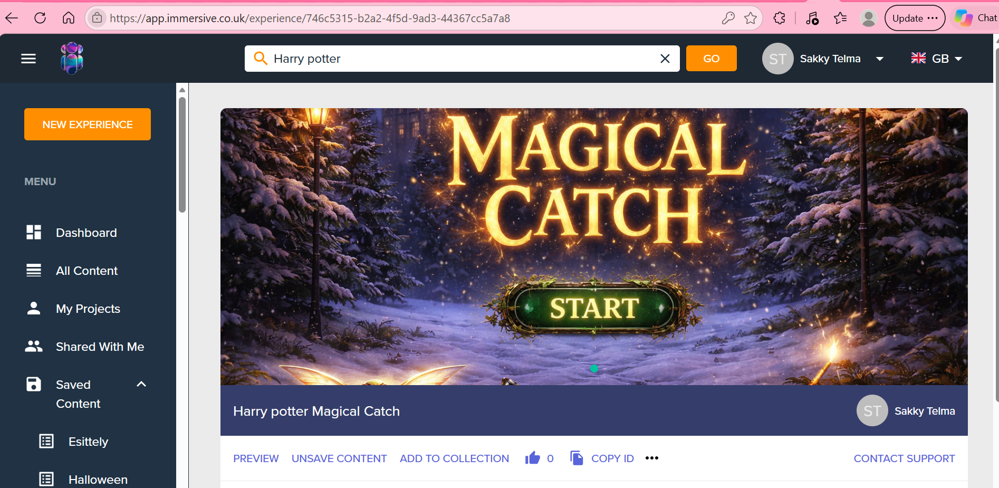

Harry Potter -teemainen peli – Immersive
Ohjelmoinnin työpaikalla järjestettävä koulutus, Savon ammattiopisto | 03/2026–05/2026
Suunnittelin ja toteutin Harry Potter -teemaisen pelin Immersive-ohjelmistolla. Muokkasin peliin kuvia, videoita ja ääniä.
